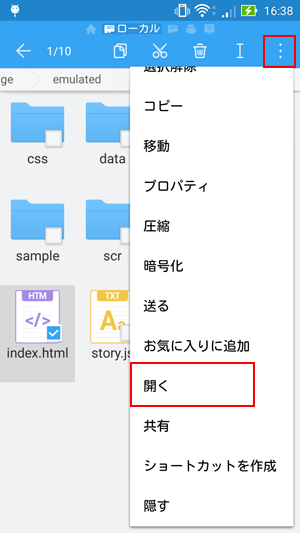

Androidでは、ホームページのようにURLから読み込む方法と、直接ファイルを置いて実行する方法があります。
ゲームを公開できる環境がない場合はこちらの方法でAndroidで遊ぶことができます。
１．まずはAndroidをパソコンに繋ぎましょう。
パソコンをつなぐと、マイコンピューターにAndroid端末が表示されると思います。
２．Androidのフォルダを開いて、中にフォルダをドラッグ＆ドロップします。
３．次にAndroidのファイルを見ることができる「ファイルマネージャー」をAndroidにインストールしておきましょう。
Androidもパソコンのように中にフォルダやファイルが詰まっています。４．ファイルマネージャーを開いて、先ほど入れたフォルダを見つけます。
「デバイス＞novelmaker」とすぐに入れたフォルダが見つけられるかと思います。
５．「index.html」を選択し、「HTMLビューアーで開く」を選択します。
６．起動！
１．「index.html」をロングタップします。
２．選択状態になるので、左上の「…」から「開く」を選びましょう

３．選択ボックスでは「その他」を選びます
４．アプリのリストが出てきますから、使いたいブラウザを選んでください。
これで起動完了です。
雑談 Androidではこのように直接フォルダを入れることができますが、iPhoneはこのようなことができません。 iPhoneでプレイしたい場合は、ホームページのように公開することが最も早い方法です。